# Data access
library(emodnet.wfs)
library(emodnet.wcs)
library(CopernicusMarine)
# Spatial data wrangling
library(terra)
library(sf)
# Data wrangling
library(dplyr)
library(tidyr)
library(purrr)
library(stringr)
# Data visualization
library(ggplot2)
library(ggridges)
library(patchwork)
library(tidyterra)
# Interactive maps
library(leaflet)
library(htmlwidgets)4: Characterising Benthic Biozones
Combining Habitat Maps, Bathymetry, Temperature, Species Occurrences and Body Size Data in the Gulf of Lion
Learn to integrate EMODnet WFS and WCS services with external data sources including the Copernicus Marine Service and trait databases. Characterise benthic biozones in the Gulf of Lion using habitat composition, substrate type, environmental conditions, and body size distributions.
Introduction
The Gulf of Lion, located in the northwestern Mediterranean off the coast of southern France, hosts a rich diversity of benthic communities shaped by the Rhône River delta, diverse substrates from sandy beaches to deep canyons, and strong environmental gradients. Characterising the biozones of this region, from the sunlit infralittoral to the deep bathyal, requires bringing together habitat maps, environmental data, species occurrences, and functional traits such as body size.
In this tutorial, we demonstrate how to integrate multiple EU marine data infrastructures to characterise benthic biozones in the Gulf of Lion. We combine:
- EMODnet WFS for habitat maps and species occurrence records
- EMODnet WCS for bathymetry data
- Copernicus Marine Service for bottom temperature
- MOBS database for species body size data
This multi-source approach reflects real-world marine ecological analysis, where insights emerge from combining data across platforms and domains.
Why Include Body Size?
Body size is a fundamental trait linked to metabolism, feeding strategy, life history, and ecological role. Adding body size to a biozone characterisation enriches the picture beyond habitat composition and physical conditions. The distribution of body sizes across biozones can reveal:
- Environmental filtering: Temperature and depth gradients may favour certain body size ranges
- Habitat associations: Different seabed types may support communities with distinct size structures
- Community function: Body size distributions affect energy flow and ecosystem processes
Learning Objectives
By the end of this tutorial, you will be able to:
- Retrieve seabed habitat polygons from EMODnet Seabed Habitats WFS
- Access benthic species occurrence data from EMODnet Biology WFS
- Download bathymetry rasters from EMODnet Bathymetry WCS
- Access bottom temperature data from the Copernicus Marine Service
- Link species records to body size data from external databases
- Use spatial joins to assign habitat and biozone attributes to species occurrences based on location
- Join datasets using shared identifiers (AphiaIDs)
- Extract zonal statistics from rasters using habitat polygons
- Characterise benthic biozones using habitat, environmental, and trait data
- Create interactive maps with the
leafletpackage
Data Sources
EMODnet WFS (Vector Data):
| Layer | Service | Description |
|---|---|---|
eusm2025_eunis2019_full |
seabed_habitats_general_datasets_and_products | EU Seabed Map with EUNIS 2019 classification |
eb185_benthos_full_matched |
biology | Benthic species occurrence records from European seas |
EMODnet WCS (Raster Data):
| Coverage | Service | Description |
|---|---|---|
emodnet__mean_2022 |
bathymetry | Mean water depth (bathymetry) |
External Sources:
| Source | Description |
|---|---|
| Copernicus Marine Service | Bottom temperature from MEDSEA_MULTIYEAR_PHY_006_004 reanalysis |
| MOBS Database | Marine Organism Body Size database (McClain et al. 2025) |
Setup
Packages
This tutorial uses a broader set of packages than previous tutorials, reflecting the multi-source integration workflow:
TipPackage installation
Most packages are available from CRAN:
install.packages(c(
"emodnet.wfs", "CopernicusMarine", "terra", "sf", "stars",
"dplyr", "tidyr", "purrr", "readr", "stringr", "ggplot2",
"ggridges", "janitor", "patchwork", "tidyterra", "leaflet",
"htmlwidgets",
"rnaturalearth"
))The emodnet.wcs package is not yet on CRAN; install the development version from GitHub:
# install.packages("pak")
pak::pak("EMODnet/emodnet.wcs")Study Area
We focus on the Gulf of Lion in the northwestern Mediterranean. This region offers good coverage across most data sources involved, with diverse substrate types (sand, mud, coarse sediments, seagrass meadows) and spatial sampling across 165 unique locations. The Gulf of Lion also spans multiple biozones from infralittoral to bathyal depths.
We start by defining a bounding box for our study area in WGS 84 (longitude/latitude degrees), chosen to cover the continental shelf and slope of the Gulf of Lion from roughly Nice to Perpignan. We will use this to filter data downloads to this region. We also create an EPSG:3035 (ETRS89-extended / LAEA Europe) version. This is an equal-area projection well suited to European marine data: every cell and polygon covers the same ground area regardless of latitude, which is important for accurate zonal statistics and spatial joins. For this reason, we will be working in this CRS throughout the tutorial. Where possible, we will download data directly in EPSG:3035; where not, we will reproject to it before analysis (we discuss this in more detail in the spatial data integration section):
# Study area bounding box in WGS 84 (degrees)
study_bbox <- sf::st_bbox(
c(xmin = 3, ymin = 42.5, xmax = 7, ymax = 44),
crs = 4326
)
# As polygon geometries for visualisation and cropping
bbox_polygon <- sf::st_as_sfc(study_bbox)
# EPSG:3035 bbox and polygon
bbox_polygon_3035 <- sf::st_transform(bbox_polygon, 3035)
study_bbox_3035 <- sf::st_bbox(bbox_polygon_3035)Code
# Get Mediterranean coastlines
med_countries <- rnaturalearth::ne_countries(
scale = "medium",
returnclass = "sf"
) |>
sf::st_crop(c(xmin = -2, ymin = 38, xmax = 12, ymax = 46)) |>
sf::st_transform(3035)
ggplot() +
geom_sf(
data = med_countries,
fill = "gray90",
color = "gray60",
linewidth = 0.3
) +
geom_sf(data = bbox_polygon, fill = NA, color = "#004494", linewidth = 1.5) +
coord_sf(crs = 4326, xlim = c(-2, 12), ylim = c(38, 46)) +
labs(x = NULL, y = NULL) +
theme_minimal() +
theme(panel.grid = element_line(color = "gray85", linewidth = 0.2))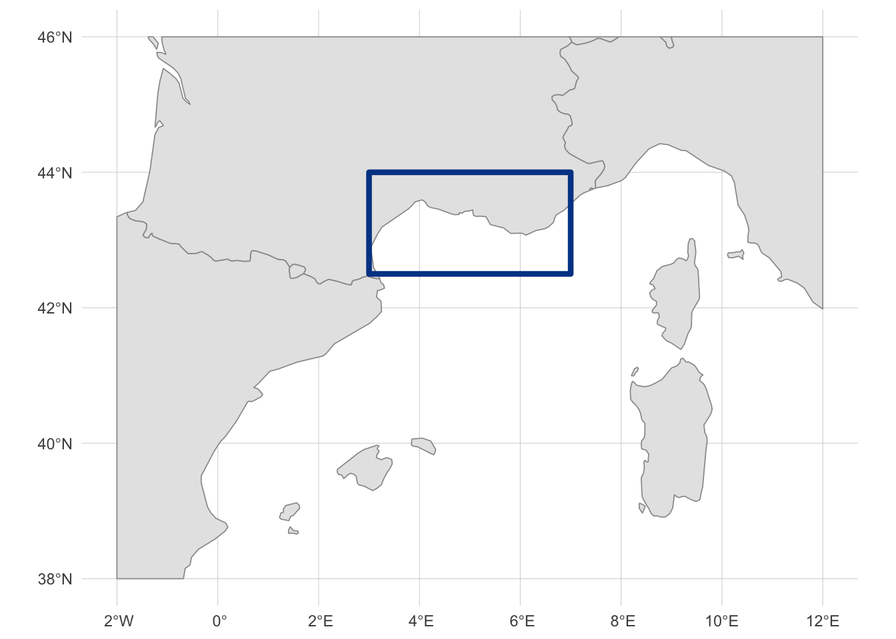
Retrieving Seabed Habitat Data
Our first data source is seabed habitat polygons from EMODnet Seabed Habitats. These polygons define the spatial framework for our biozone characterisation, providing EUNIS habitat codes, substrate types, and biozone classifications across the study area.
Connecting to EMODnet Seabed Habitats WFS
For an introduction to working with WFS services and the emodnet.wfs package, see Tutorial 1. Here we apply the same workflow to the Seabed Habitats service.
habitat_wfs <- emodnet_init_wfs_client(
service = "seabed_habitats_general_datasets_and_products"
)Exploring Habitat Layers
We need habitat polygons from the EUSeaMap, the broad-scale predictive habitat map for European seas. The service contains many layers, so we filter by title to find the EUSeaMap products:
habitat_layers <- emodnet_get_wfs_info(habitat_wfs)
# Search for EUSeaMap layers by title
habitat_layers |>
filter(grepl("EUSeaMap", title)) |>
select(layer_name, title)The results show separate layers for energy, substrate, biozone, and two habitat classification systems (EUNIS 2007 and EUNIS 2019). We choose eusm2025_eunis2019_full because EUNIS 2019 is the more recent classification standard and this layer includes both the habitat code and the substrate and biozone attributes we need.
Understanding Habitat Classifications
Let’s examine the attribute structure of the habitat layer:
habitat_attrs <- layer_attribute_descriptions(
wfs = habitat_wfs,
layer = "eusm2025_eunis2019_full"
)
habitat_attrsKey attributes include:
-
geom: Geometry column (the only row withgeometry = TRUE). WFS layers can use different names for this column, so we extract it programmatically below to construct CQL (Common Query Language) bounding box filters -
eunis2019c: EUNIS 2019 habitat classification (level 3) -
eunis2019d: Human-readable EUNIS 2019 habitat description -
substrate: Seabed substrate type -
biozone: Biological zone
Let’s check what habitat values are present across the full layer (not just our study area) using layer_attribute_inspect():
eunis_values <- layer_attribute_inspect(
wfs = habitat_wfs,
layer = "eusm2025_eunis2019_full",
attribute = "eunis2019c"
)
eunis_valuesScrolling through the values, you will notice that not all entries are clean EUNIS codes. Some contain "Na" (polygons with no habitat classification) and others contain "or" (e.g. "MB551 or MB552"), representing polygons where the classification is ambiguous between two habitat types. Let’s quantify how many polygons across the entire layer are affected:
These are data gaps in the EUSeaMap product itself, not specific to our study area. Since these values are not valid EUNIS habitat classifications, we filter them out server-side using CQL to keep our habitat dataset clean.
Building an Attribute CQL Filter
In previous tutorials we used CQL (Common Query Language) filters to spatially subset WFS data by bounding box. CQL can also filter on attribute values, which we use here for the first time to exclude the problematic eunis2019c entries identified above. We combine both spatial and attribute conditions into a single filter so the server only returns the data we need.
We start by extracting the geometry column name for the BBOX filter:
habitat_geom_col <- habitat_attrs$name[habitat_attrs$geometry]We also want to combine the spatial BBOX filter with attribute filters to exclude the problematic eunis2019c values we identified above. CQL supports combining conditions with AND: we use <> to exclude exact matches and NOT LIKE with % wildcards for pattern matching. For more on attribute filtering syntax, see the emodnet.wfs ECQL filtering vignette.
# Spatial filter: bounding box
bbox_filter <- sprintf(
"BBOX(%s, %s, %s, %s, %s, 'EPSG:4326')",
habitat_geom_col,
study_bbox["xmin"],
study_bbox["ymin"],
study_bbox["xmax"],
study_bbox["ymax"]
)
# Attribute filters: exclude invalid EUNIS codes
na_filter <- "eunis2019c <> 'Na'"
or_filter <- "eunis2019c NOT LIKE '%or%'"
# Combine all conditions
habitat_cql_filter <- paste(bbox_filter, na_filter, or_filter, sep = " AND ")
habitat_cql_filter
#> [1] "BBOX(geom, 3, 42.5, 7, 44, 'EPSG:4326') AND eunis2019c <> 'Na' AND eunis2019c NOT LIKE '%or%'"The <> operator excludes polygons where eunis2019c is exactly "Na", and NOT LIKE '%or%' excludes any value containing the substring "or" (the % characters are CQL wildcards matching any sequence of characters).
Downloading Habitat Polygons
Now we download with the combined spatial and attribute filter. We use GeoJSON format (outputFormat = "application/json") for faster downloads and simpler geometry types, and set simplify = TRUE to return a single sf data frame rather than a list of layers. The habitat layer’s native CRS is Web Mercator (EPSG:3857), but we request EPSG:3035 via crs = 3035, the equal-area projection introduced above:
seabed_habitats <- emodnet_get_layers(
wfs = habitat_wfs,
layers = "eusm2025_eunis2019_full",
cql_filter = habitat_cql_filter,
outputFormat = "application/json",
simplify = TRUE,
crs = 3035
)
nrow(seabed_habitats)
#> [1] 24704Cropping Polygons to the Study Area
The WFS server returns any polygon that overlaps our bounding box, but it returns each polygon in its entirety. Some polygons, particularly large deep-sea habitat types like the abyssal plain, may extend far beyond our study area. We can see this by checking the bounding box of the downloaded data:
# Transform to WGS 84 to show extent in degrees
st_bbox(seabed_habitats) |> st_transform(4326)
#> xmin ymin xmax ymax
#> -7.05696 34.96526 16.27096 44.36373The extent (-7–16°E, 35–44°N) is much larger than our study area (3–7°E, 42.5–44°N). Leaving these oversized polygons in place causes two problems: it can skew analyses by including data outside the area of interest, and later, when we extract zonal statistics from rasters constrained to our bounding box, the overhanging parts of polygons produce NaN values (the raster has no cells to average over those areas).
We fix this with sf::st_crop(), which clips all geometries to a target rectangle. We use bbox_polygon_3035, the EPSG:3035 version of our study area polygon created at the start of the tutorial:
seabed_habitats <- seabed_habitats |>
st_crop(bbox_polygon_3035)
st_bbox(seabed_habitats) |> st_transform(4326)
#> xmin ymin xmax ymax
#> 2.933693 42.306831 7.075524 43.686873The bounding box of our seabed habitat data now matches our study area.
Inspecting Downloaded Data
Let’s preview the key columns. Each row is a polygon with a EUNIS habitat code, a human-readable description, substrate type, and biozone:
Note
The WFS layer may use a different name for its geometry column (e.g. the_geom, msGeometry), but after download the sf package standardises the column name to geometry. This is normal and applies to all WFS downloads throughout this tutorial.
The geometry column contains sf POLYGON, MULTIPOLYGON features. Each habitat feature is a polygon (or collection of polygons) delineating an area of seabed with a particular classification. The columns show:
-
eunis2019c: the EUNIS 2019 level 3 code (e.g.MB552) -
eunis2019d: the human-readable habitat description -
substrate: the physical substrate (e.g. Sand, Mud, Coarse substrate) -
biozone: the depth zone (e.g. Infralittoral, Deep circalittoral)
The biozone variable represents depth zones from shallow (Infralittoral) to deep (Abyssal).
unique(seabed_habitats$biozone)
#> [1] "Infralittoral" "Shallow circalittoral" "Deep circalittoral"
#> [4] "Lower bathyal" "Upper bathyal" "Abyssal"We convert it to an ordered factor for meaningful analysis along depth gradients, and standardise substrate casing (the source data mixes “SAND” and “Sand”):
biozone_levels <- c(
"Infralittoral",
"Shallow circalittoral",
"Deep circalittoral",
"Upper bathyal",
"Lower bathyal",
"Abyssal"
)
seabed_habitats <- seabed_habitats |>
mutate(
biozone = factor(biozone, levels = biozone_levels, ordered = TRUE),
substrate = str_to_sentence(substrate)
)We can confirm the CQL filter worked by checking the unique eunis2019c values in the downloaded data:
All clean EUNIS codes, with no "Na" or "or" values. Let’s see which habitat types are most common in our study area, using the human-readable eunis2019d descriptions:
# Summarise habitat types present
seabed_habitats |>
st_drop_geometry() |>
count(eunis2019d, sort = TRUE) |>
head(10)Visualising Seabed Habitats
Code
ggplot() +
geom_sf(data = med_countries, fill = "gray90", colour = "gray70") +
geom_sf(
data = seabed_habitats,
aes(fill = str_wrap(eunis2019d, width = 50)),
colour = NA,
alpha = 0.8
) +
coord_sf(
xlim = c(
study_bbox_3035["xmin"],
study_bbox_3035["xmax"]
),
ylim = c(
study_bbox_3035["ymin"],
study_bbox_3035["ymax"]
)
) +
scale_fill_viridis_d(option = "turbo", direction = -1, name = NULL) +
labs(title = "Seabed Habitats (EUNIS 2019)") +
theme_minimal() +
theme(
legend.position = "bottom",
legend.text = element_text(size = 9),
legend.key.size = unit(0.4, "cm"),
plot.margin = margin(2, 2, 2, 2)
) +
guides(fill = guide_legend(ncol = 2, override.aes = list(alpha = 1)))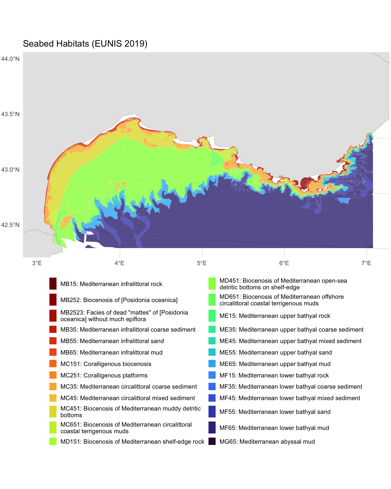
Retrieving Species Occurrence Data
Next, we retrieve benthic species occurrence records from EMODnet Biology. These are geolocated records whose species names have also been matched to the World Register of Marine Species (WoRMS) via an AphiaID code, ensuring taxonomic consistency. Later, we will use a spatial join to link these point occurrences to the habitat polygons we just downloaded, assigning each record to a habitat type, biozone and substrate based on where it falls on the seabed map.
TipTaxonomic matching with the
worrms package
The data we use here are already matched to WoRMS, but if you need to match your own species lists to the WoRMS taxonomic backbone, the worrms R package provides a programmatic interface to WoRMS. It supports fuzzy name matching, retrieval of accepted names and synonyms, and lookup of taxonomic hierarchies, useful for standardising species names across datasets.
Connecting to EMODnet Biology WFS
We follow the same discovery workflow as for the habitat service above.
bio_wfs <- emodnet_init_wfs_client(service = "biology")Exploring Available Layers
Let’s search for benthic occurrence data:
bio_layers <- emodnet_get_wfs_info(bio_wfs)
# Filter for benthos-related layers
bio_layers |>
filter(grepl("benthos", layer_name, ignore.case = TRUE)) |>
select(layer_name, title, abstract) |>
# Keep first paragraph of abstract for display
mutate(abstract = str_extract(abstract, "^[^\n]+")) |>
knitr::kable()| layer_name | title | abstract |
|---|---|---|
| eb185_benthos_full_matched | Seabed habitat and macrobenthos occurrences in European seas | This product is built from two existing EMODnet data products. It uses the EUSeaMap product created by EMODNet Seabed Habitats and the Presence/absence data of macrozoobenthos in the European Seas product created by EMODnet Biology to obtain lists of all macrobenthic species occurring in all EUNIS seabed habitat types. For the purposes of this product the seabed habitat map is summarised on a grid at approx. 500m resolution, with each grid cell assigned to the dominant EUNIS code present within it. Summaries of benthic diversity are created for each grid cell, as well as more synthetic summaries by EUNIS category. The full matched benthos community data was written to file in the derived data folder as benthos_full_matched in parquet format with gzip compression. |
| benthos_europe | Summary presence/absence maps of macro-endobenthos in European Seas, based on the EMODNET Biology database | The large databases of EMODNET Biology only store confirmed presences of taxon. However, when mapping taxon distribution, it is also important where the taxon did not occur: there is at least as much information in absences as in presences. Inferring absences from presence-only databases is difficult and always involves some guesswork. In this product we have used as much meta-information as possible to guide us in inferring absences. There is important meta-information at two different levels: the level of the data set, and the level of the taxon. Datasets can contain implicit information on absences when they have uniformly searched for the same taxon over a number of sample locations. |
We choose eb185_benthos_full_matched because it contains individual geolocated occurrence records, each matched to WoRMS (providing AphiaIDs we can use to link to trait data). The benthos_europe layer, by contrast, provides gridded presence/absence summaries rather than individual occurrence records, so it is less suited to point-level analysis.
Understanding Layer Structure
Before downloading, let’s examine what attributes are available (see Tutorial 1 for more on inspecting WFS layer metadata):
benthos_attrs <- layer_attribute_descriptions(
wfs = bio_wfs,
layer = "eb185_benthos_full_matched"
)
benthos_attrsKey attributes for our analysis include:
-
st_point: Geometry column (extracted programmatically for the CQL filter, as with the habitat layer above) -
aphiaid: WoRMS identifier for linking to trait databases -
scientificname: Species name for display -
lon,lat: Coordinates -
year: Sampling year -
eusm_polygon_id: Link to the EUSeaMap grid polygon -
EUNIS2019C,EUNIS2019D: EUNIS 2019 habitat classification (level 3 and 4), pre-matched via the EUSeaMap grid. We will not use these for joining; instead we use a spatial join to assign habitat attributes based on where each occurrence falls within our habitat polygons
Downloading Occurrence Data
As with the habitat data, we construct a CQL BBOX filter for our study area:
benthos_geom_col <- benthos_attrs$name[benthos_attrs$geometry]
benthos_bbox_filter <- sprintf(
"BBOX(%s, %s, %s, %s, %s, 'EPSG:4326')",
benthos_geom_col,
study_bbox["xmin"],
study_bbox["ymin"],
study_bbox["xmax"],
study_bbox["ymax"]
)Now we download the data with emodnet_get_layers(), passing our CQL filter to restrict the query to the study area. As with the habitat data, we use GeoJSON format and request EPSG:3035 so both vector datasets share the same equal-area CRS:
benthos_occurrences <- emodnet_get_layers(
wfs = bio_wfs,
layers = "eb185_benthos_full_matched",
cql_filter = benthos_bbox_filter,
outputFormat = "application/json",
simplify = TRUE,
crs = 3035
)
# Check the result
nrow(benthos_occurrences)
#> [1] 16694Inspecting Downloaded Data
Each record is a geolocated POINT (in contrast to the habitat polygons we retrieved earlier), representing a species observed at a specific location and time. The key columns for our analysis are:
-
aphiaid: WoRMS identifier, which we will use to link to body size data -
scientificname: Species name -
year: Sampling year -
geometry: Location of the observation
Let’s examine the taxonomic diversity and data completeness:
# How many unique species?
n_species <- n_distinct(benthos_occurrences$aphiaid)
# How many records have valid AphiaIDs for trait matching?
n_with_aphiaid <- sum(!is.na(benthos_occurrences$aphiaid))
cat(sprintf(
"Total records: %d\nUnique species (AphiaIDs): %d\nRecords with valid AphiaID: %d (%.1f%%)\n",
nrow(benthos_occurrences),
n_species,
n_with_aphiaid,
100 * n_with_aphiaid / nrow(benthos_occurrences)
))
#> Total records: 16694
#> Unique species (AphiaIDs): 1173
#> Records with valid AphiaID: 16694 (100.0%)Quick Visualisation
Code
ggplot() +
geom_sf(data = med_countries, fill = "gray90", colour = "gray70") +
geom_sf(
data = benthos_occurrences,
colour = "#0077BE",
size = 2,
alpha = 0.3
) +
coord_sf(
xlim = c(
study_bbox_3035["xmin"],
study_bbox_3035["xmax"]
),
ylim = c(
study_bbox_3035["ymin"],
study_bbox_3035["ymax"]
)
) +
labs(
title = "Benthic Species Occurrences",
subtitle = sprintf(
"%d records in the Gulf of Lion",
nrow(benthos_occurrences)
)
) +
theme_minimal()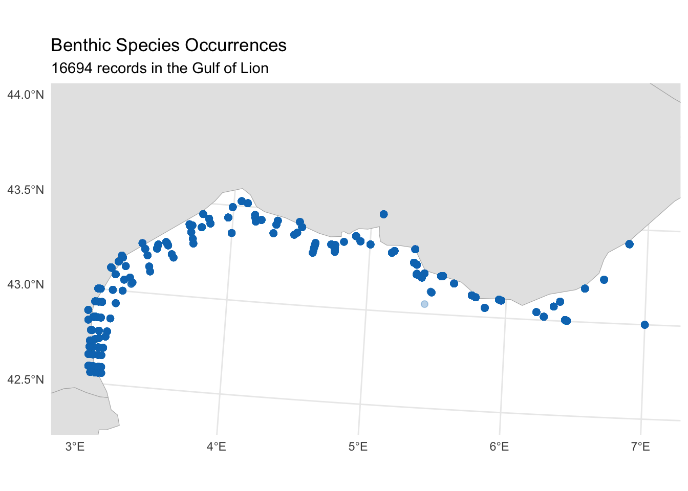
Retrieving Bathymetry Data
Bathymetry (water depth) provides essential environmental context for our habitat characterisation. Unlike the vector data (polygons and points) we have downloaded so far, bathymetry is served as raster data: a grid of cells where each cell holds a depth value. We retrieve this from EMODnet Bathymetry using WCS (see Tutorial 2 for an introduction to working with the emodnet.wcs package).
Connecting to EMODnet Bathymetry WCS
bathy_wcs <- emdn_init_wcs_client(service = "bathymetry")Exploring Available Coverages
emdn_get_coverage_ids() lists all available coverage layers from the service:
bathy_coverage_ids <- emdn_get_coverage_ids(bathy_wcs)
bathy_coverage_ids
#> [1] "emodnet__mean" "emodnet__mean_2016"
#> [3] "emodnet__mean_2018" "emodnet__mean_2020"
#> [5] "emodnet__mean_2022" "emodnet__mean_atlas_land"
#> [7] "emodnet__mean_multicolour" "emodnet__mean_rainbowcolour"The coverage IDs encode the product type and reference year. The mean coverages provide the gridded mean depth, with year suffixes indicating different releases of the bathymetric compilation. We use the most recent release (emodnet__mean_2022). emdn_get_coverage_info() provides metadata including the spatial resolution, extent, and coordinate reference system:
bathy_info <- emdn_get_coverage_info(
wcs = bathy_wcs,
coverage_ids = "emodnet__mean_2022"
)
bathy_info |>
knitr::kable()| data_source | service_name | service_url | coverage_id | band_description | band_uom | constraint | nil_value | dim_n | dim_names | grid_size | resolution | extent | crs | wgs84_extent | temporal_extent | vertical_extent | subtype | fn_seq_rule | fn_start_point | fn_axis_order |
|---|---|---|---|---|---|---|---|---|---|---|---|---|---|---|---|---|---|---|---|---|
| emodnet_wcs | https://ows.emodnet-bathymetry.eu/wcs | bathymetry | emodnet__mean_2022 | Depth | W.m-2.Sr-1 | -3.4028235e+38-3.4028235e+38 | NA | 2 | lat(deg):geographic; long(deg):geographic | 108960x75840 | 0.00104166666666667 Deg x 0.00104166666666667 Deg | -70.5, 11, 43, 90 | EPSG:4326 | -70.5, 11, 43, 90 | NA | NA | RectifiedGridCoverage | Linear | 0,0 | +2,+1 |
The resolution is approximately 1/960 of a degree (~115 m at this latitude). Note that the coverage CRS is EPSG:4326, which is why we pass study_bbox (our WGS 84 bounding box) when downloading. The nil value is NA, so no special handling of missing data codes is needed.
Downloading Bathymetry
We download the bathymetry raster for our study area using emdn_get_coverage(), which returns a SpatRaster:
bathymetry <- emdn_get_coverage(
wcs = bathy_wcs,
coverage_id = "emodnet__mean_2022",
bbox = study_bbox
)
#> <GMLEnvelope>
#> ....|-- lowerCorner: 42.5 3
#> ....|-- upperCorner: 44 7
bathymetry
#> class : SpatRaster
#> size : 1440, 3840, 1 (nrow, ncol, nlyr)
#> resolution : 0.001041667, 0.001041667 (x, y)
#> extent : 3, 7, 42.5, 44 (xmin, xmax, ymin, ymax)
#> coord. ref. : lon/lat WGS 84 (EPSG:4326)
#> source : emodnet__mean_2022_42.5,3,44,7.tif
#> name : emodnet__mean_2022_42.5,3,44,7_depthInspecting Downloaded Data
EMODnet bathymetry uses the convention of negative values for depth below sea level and positive values for elevation above it. Since our bounding box overlaps the coastline, the raster includes both marine cells (negative) and land cells (positive). We can check the value range with terra::global(), which computes a summary statistic across all cells of a SpatRaster:
terra::global(bathymetry, range, na.rm = TRUE)The negative minimum confirms deep marine areas. The positive maximum (~1,900 m) may seem surprising for a marine study area, but our bounding box extends to 44°N, which reaches well inland over southern France into the foothills of the Pyrenees and Massif Central. EMODnet bathymetry is a digital terrain model that covers both sea and land, so these terrestrial elevations are included in the download. We want to mask land and sea-level cells (values >= 0) to NA and negate the remaining values so that depth is expressed as a positive number (deeper = larger). We can do both in a single step using terra::ifel(), the terra equivalent of dplyr::if_else(): it takes a logical raster and returns a new raster with one value where the condition is TRUE and another where it is FALSE. Here the TRUE branch becomes NA (masking land) and the FALSE branch flips the sign of marine cells:
Visualising Bathymetry
Code
ggplot() +
geom_spatraster(data = depth) +
scale_fill_viridis_c(
name = "Depth (m)",
na.value = "gray30",
option = "mako",
direction = -1,
breaks = c(0, 200, 500, 1000, 2000, 2500),
# Allocate more of the colour gradient to shallow depths so that
# shelf features and canyon heads are visible despite the large
# overall depth range (~0–2700 m)
values = scales::rescale(
c(0, 50, 200, 500, 1000, 2000, 2500),
to = c(0, 1),
from = c(0, 2500)
)
) +
labs(title = "Gulf of Lion Bathymetry") +
theme_minimal() +
theme(legend.position = "bottom") +
guides(
fill = guide_colorbar(
barwidth = 15,
barheight = 0.5,
title.position = "top"
)
)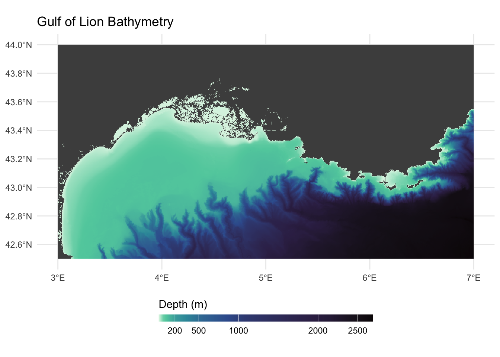
Retrieving Bottom Temperature
Bottom temperature provides insight into thermal niches and is a key variable for characterising environmental conditions across biozones. We access this from the Copernicus Marine Service (CMEMS), the marine component of the EU’s Copernicus Earth observation programme. Copernicus is the Earth observation component of the EU’s Space programme, drawing on satellite and in-situ observations to monitor the planet. All Copernicus data and products are provided on a free, full and open basis under EU regulation. CMEMS provides ocean analysis, forecast and reanalysis products covering the global ocean and European regional seas. We interact with it in R using the CopernicusMarine package.
How Copernicus Marine Service data is organised
The EMODnet services we used above follow OGC standards: WFS serves vector features and WCS serves raster coverages, each accessed through a service client. Copernicus Marine Service organises its data differently. Data is stored in both NetCDF and zarr (a cloud-native array format) and discovered through a STAC (SpatioTemporal Asset Catalog) catalogue. The CopernicusMarine package handles this transparently (using the zarr stores for efficient spatial subsetting), but the terminology differs from the OGC services:
| EMODnet | Copernicus Marine | Copernicus Example |
|---|---|---|
Service (e.g., "biology") |
Product (a dataset with a unique ID) | MEDSEA_MULTIYEAR_PHY_006_004 |
Layer (e.g., "eb185_benthos_full_matched") |
Layer (a specific temporal resolution or subset) | cmems_mod_med_phy-temp_my_4.2km_P1M-m |
| Attributes (WFS) or Bands (WCS) | Variables (physical quantities stored in the array) |
bottomT, thetao
|
| 2D features or grids | Multi-dimensional arrays with longitude, latitude, depth, and time | 4D datacube |
Because the data is multi-dimensional, cms_download_subset() returns a stars object rather than the sf or terra objects returned by EMODnet services. For more background, see the stars and zarr sections in the Geospatial Concepts page.
The metadata returned by CopernicusMarine functions follows the STAC specification. For a general introduction to what STAC is and how catalogues, collections, and items relate, see the STAC intro tutorial. In practice, the deeply nested metadata structures can be challenging to navigate, but contain rich information about layers, variables, dimensions, and time ranges, as we explore below.
The discovery workflow follows a similar pattern to EMODnet: list what is available, inspect metadata, then download a subset. For more on data discovery, see the CopernicusMarine vignettes on product information and translating from the Copernicus Marine toolbox.
Choosing a Data Product
Bottom temperature is typically available in physical reanalysis products, identified by MULTIYEAR_PHY in their product IDs. cms_products_list() lists all available products; we filter to physical reanalysis:
# List physical reanalysis products
cms_products_list() |>
filter(grepl("MULTIYEAR_PHY", product_id)) |>
select(product_id, title) |>
knitr::kable()| product_id | title |
|---|---|
| GLOBAL_MULTIYEAR_PHY_001_030 | Global Ocean Physics Reanalysis |
| GLOBAL_MULTIYEAR_PHY_ENS_001_031 | Global Ocean Ensemble Physics Reanalysis |
| ARCTIC_MULTIYEAR_PHY_002_003 | Arctic Ocean Physics Reanalysis |
| ARCTIC_MULTIYEAR_PHY_ICE_002_016 | Arctic Ocean Sea Ice Reanalysis |
| BALTICSEA_MULTIYEAR_PHY_003_011 | Baltic Sea Physics Reanalysis |
| BLKSEA_MULTIYEAR_PHY_007_004 | Black Sea Physics Reanalysis |
| IBI_MULTIYEAR_PHY_005_002 | Atlantic-Iberian Biscay Irish- Ocean Physics Reanalysis |
| MEDSEA_MULTIYEAR_PHY_006_004 | Mediterranean Sea Physics Reanalysis |
| NWSHELF_MULTIYEAR_PHY_004_009 | Atlantic- European North West Shelf- Ocean Physics Reanalysis |
A Copernicus product plays the same role as an EMODnet service (like "biology" or "bathymetry"): it is a thematic collection that groups related layers together. For small study areas, regional products typically offer higher resolution and are specifically validated for that region. For our Gulf of Lion study, the Mediterranean product (MEDSEA_MULTIYEAR_PHY_006_004) provides ~4.2 km resolution compared to ~8 km for the global product.
Browsing Available Variables
Unlike OGC services where each layer contains a single dataset, Copernicus products are built on a datacube architecture. A single product can bundle multiple physical variables (temperature, salinity, currents) across multiple layers, where each layer can have distinct dimensions. We can get a high-level overview of all variables available across the entire product using cms_product_details():
med_product <- cms_product_details("MEDSEA_MULTIYEAR_PHY_006_004")
# allVariables aggregates human-readable variable names across ALL layers
med_product$properties$allVariables |> unlist()
#> [1] "Cell thickness"
#> [2] "Eastward sea water velocity"
#> [3] "Model level number at sea floor"
#> [4] "Net downward shortwave flux at sea water surface"
#> [5] "Northward sea water velocity"
#> [6] "Ocean mixed layer thickness defined by sigma theta"
#> [7] "Precipitation flux"
#> [8] "Sea binary mask"
#> [9] "Sea floor depth below geoid"
#> [10] "Sea surface height above geoid"
#> [11] "Sea water potential temperature"
#> [12] "Sea water potential temperature at sea floor"
#> [13] "Sea water salinity"
#> [14] "Surface downward heat flux in sea water"
#> [15] "Surface downward latent heat flux"
#> [16] "Surface downward sensible heat flux"
#> [17] "Surface downward x stress"
#> [18] "Surface downward y stress"
#> [19] "Surface net downward longwave flux"
#> [20] "Surface water evaporation flux"
#> [21] "Water flux into sea water from rivers"This confirms the product includes “Sea water potential temperature at sea floor”, which is what we need. However, this is a product-wide summary: it aggregates variable names across all layers, so not every variable listed here is necessarily available in every layer. To find out exactly which variables are available in which layers, and to get the variable ids needed for downloading, we need to drill into the layer-level metadata.
Discovering Layers and Their Variables
A product contains multiple layers, each offering a different temporal resolution of the same underlying data (e.g. daily vs monthly means). cms_product_services() lists them:
med_services <- cms_product_services("MEDSEA_MULTIYEAR_PHY_006_004")
# Each row is a layer
med_services$id
#> [1] "cmems_mod_med_phy_my_4.2km-climatology_P1M-m_202211"
#> [2] "cmems_mod_med_phy_my_4.2km_static_202211--ext--coords"
#> [3] "cmems_mod_med_phy_my_4.2km_static_202211--ext--bathy"
#> [4] "cmems_mod_med_phy_my_4.2km_static_202211--ext--mdt"
#> [5] "med-cmcc-cur-int-m_202112"
#> [6] "med-cmcc-cur-rean-d_202012"
#> [7] "med-cmcc-cur-rean-h_202012"
#> [8] "med-cmcc-cur-rean-m_202012"
#> [9] "med-cmcc-mld-int-m_202112"
#> [10] "med-cmcc-mld-rean-d_202012"
#> [11] "med-cmcc-mld-rean-m_202012"
#> [12] "med-cmcc-sal-int-m_202112"
#> [13] "med-cmcc-sal-rean-d_202012"
#> [14] "med-cmcc-sal-rean-m_202012"
#> [15] "med-cmcc-ssh-int-m_202112"
#> [16] "med-cmcc-ssh-rean-d_202012"
#> [17] "med-cmcc-ssh-rean-h_202012"
#> [18] "med-cmcc-ssh-rean-m_202012"
#> [19] "med-cmcc-tem-int-m_202112"
#> [20] "med-cmcc-tem-rean-d_202012"
#> [21] "med-cmcc-tem-rean-m_202012"
#> [22] "cmems_mod_med_phy-sal_my_4.2km_P1Y-m_202211"
#> [23] "cmems_mod_med_phy-cur_my_4.2km_P1Y-m_202211"
#> [24] "cmems_mod_med_phy-mld_my_4.2km_P1Y-m_202211"
#> [25] "cmems_mod_med_phy-ssh_my_4.2km_P1Y-m_202211"
#> [26] "cmems_mod_med_phy-tem_my_4.2km_P1Y-m_202211"
#> [27] "cmems_mod_med_phy-hflux_my_4.2km_P1D-m_202411"
#> [28] "cmems_mod_med_phy-hflux_my_4.2km_P1M-m_202411"
#> [29] "cmems_mod_med_phy-mflux_my_4.2km_P1D-m_202411"
#> [30] "cmems_mod_med_phy-mflux_my_4.2km_P1M-m_202411"
#> [31] "cmems_mod_med_phy-wflux_my_4.2km_P1D-m_202411"
#> [32] "cmems_mod_med_phy-wflux_my_4.2km_P1M-m_202411"
#> [33] "cmems_mod_med_phy-cur_my_4.2km_P1D-m_202511"
#> [34] "cmems_mod_med_phy-cur_my_4.2km_P1M-m_202511"
#> [35] "cmems_mod_med_phy-cur_my_4.2km_PT1H-m_202511"
#> [36] "cmems_mod_med_phy-mld_my_4.2km_P1D-m_202511"
#> [37] "cmems_mod_med_phy-mld_my_4.2km_P1M-m_202511"
#> [38] "cmems_mod_med_phy-sal_my_4.2km_P1D-m_202511"
#> [39] "cmems_mod_med_phy-sal_my_4.2km_P1M-m_202511"
#> [40] "cmems_mod_med_phy-ssh_my_4.2km_P1D-m_202511"
#> [41] "cmems_mod_med_phy-ssh_my_4.2km_P1M-m_202511"
#> [42] "cmems_mod_med_phy-ssh_my_4.2km_PT1H-m_202511"
#> [43] "cmems_mod_med_phy-temp_my_4.2km_P1D-m_202511"
#> [44] "cmems_mod_med_phy-temp_my_4.2km_P1M-m_202511"The layer ids encode the variable group and temporal resolution (e.g., temp for temperature, P1M-m for monthly means, P1D-m for daily). Version suffixes (e.g., _202511) can be omitted when downloading.
Each layer carries rich variable metadata in its cube:variables property. The STAC datacube extension defines a base set of fields (dimensions, type, unit, description), and Copernicus Marine adds its own fields on top. Let’s examine the structure by drilling into the first variable of the first layer. med_services is a data frame with list-columns, where each row is a layer. properties[[1]] accesses the STAC metadata for the first layer, cube:variables is a named list of that layer’s variables, and [[1]] selects the first variable entry:
# Examine the metadata structure of the first variable in the first layer
str(med_services$properties[[1]]$`cube:variables`[[1]], max.level = 2)
#> List of 23
#> $ id : chr "bottomT_avg"
#> $ dimensions :List of 3
#> ..$ : chr "time"
#> ..$ : chr "latitude"
#> ..$ : chr "longitude"
#> $ type : chr "data"
#> $ unit : chr "degrees_C"
#> $ standardName : chr "sea_water_potential_temperature_at_sea_floor"
#> $ abbreviation : chr "bottomT_avg"
#> $ name :List of 1
#> ..$ en: chr "Sea floor potential temperature"
#> $ unitConversion : NULL
#> $ missingValue : num 1e+20
#> $ offset : NULL
#> $ scale : NULL
#> $ valueMin : num 12.8
#> $ valueMax : num 19.6
#> $ valueDiffMax : num 3.38
#> $ valueDiffRelMax : int 25
#> $ valueClamp : logi TRUE
#> $ hasLogScale : logi TRUE
#> $ logScale : logi FALSE
#> $ colormapId : chr "viridis"
#> $ colormapInvert : logi FALSE
#> $ colormapDiffId : chr "balance"
#> $ colormapDiffInvert: logi FALSE
#> $ valueColor : logi FALSEThe standard STAC datacube fields include dimensions (which axes the variable spans), type ("data" for measured values), and unit. In standard STAC, each variable is identified by its key name in the cube:variables map. Copernicus Marine also stores this as an explicit id field inside each variable object, along with other Copernicus-specific additions: name$en (a human-readable description), standardName (the CF convention name), and visualisation hints like colormapId and value ranges.
We can use these fields to build a clear mapping of layers to their variables. Since we need bottom temperature, we filter to the temperature layers:
# Extract variable details from each temperature layer
med_services |>
filter(grepl("tem", id, ignore.case = TRUE)) |>
rowwise() |>
reframe(
layer = id,
variable = purrr::map_chr(properties$`cube:variables`, "id"),
description = purrr::map_chr(properties$`cube:variables`, \(x) x$name$en),
unit = purrr::map_chr(properties$`cube:variables`, "unit")
) |>
knitr::kable()| layer | variable | description | unit |
|---|---|---|---|
| med-cmcc-tem-int-m_202112 | bottomT | Sea floor potential temperature | degrees_C |
| med-cmcc-tem-int-m_202112 | thetao | Potential temperature | degrees_C |
| med-cmcc-tem-rean-d_202012 | bottomT | Sea floor potential temperature | degrees_C |
| med-cmcc-tem-rean-d_202012 | thetao | Potential temperature | degrees_C |
| med-cmcc-tem-rean-m_202012 | bottomT | Sea floor potential temperature | degrees_C |
| med-cmcc-tem-rean-m_202012 | thetao | Potential temperature | degrees_C |
| cmems_mod_med_phy-tem_my_4.2km_P1Y-m_202211 | bottomT | Sea floor potential temperature | degrees_C |
| cmems_mod_med_phy-tem_my_4.2km_P1Y-m_202211 | thetao | Potential temperature | degrees_C |
| cmems_mod_med_phy-temp_my_4.2km_P1D-m_202511 | bottomT | Sea floor potential temperature | degrees_C |
| cmems_mod_med_phy-temp_my_4.2km_P1D-m_202511 | thetao | Potential temperature | degrees_C |
| cmems_mod_med_phy-temp_my_4.2km_P1M-m_202511 | bottomT | Sea floor potential temperature | degrees_C |
| cmems_mod_med_phy-temp_my_4.2km_P1M-m_202511 | thetao | Potential temperature | degrees_C |
All temperature layers contain bottomT (sea floor potential temperature) and thetao (potential temperature through the water column). For comprehensive documentation of all variable names, layer naming conventions, and production methodology, see the Product User Manual (PUM).
We choose the yearly means layer (P1Y-m) rather than daily (P1D-m) or monthly (P1M-m). The pre-computed climatology might seem ideal, but it provides a long-term average across all years, whereas we want to subset to the specific years when our species were sampled. Yearly means let us do exactly that while keeping the download small.
# Select the yearly temperature layer
temp_yearly <- med_services |>
filter(id == "cmems_mod_med_phy-tem_my_4.2km_P1Y-m_202211")The cube:dimensions property tells us the available temporal extent and time steps for our chosen layer, which is essential for knowing what date range we can request:
time_dim <- temp_yearly$properties[[1]]$`cube:dimensions`$time
# Temporal extent (start and end dates)
cat("Temporal extent:", time_dim$extent[[1]], "to", time_dim$extent[[2]])
#> Temporal extent: 1987-01-01T00:00:00Z to 2024-01-01T00:00:00Z
cat("Total time steps:", length(time_dim$values))
#> Total time steps: 38
cat("First 3 steps:", unlist(head(time_dim$values, 3)))
#> First 3 steps: 1987-01-01T00:00:00Z 1988-01-01T00:00:00Z 1989-01-01T00:00:00ZThe layer spans from 1987 to the present with yearly time steps indexed to January 1st of each year. We now have all four pieces of information needed to download: the product ID (MEDSEA_MULTIYEAR_PHY_006_004), the layer ID (yearly means, cmems_mod_med_phy-tem_my_4.2km_P1Y-m), the variable ID (bottomT), and the available time range.
Choosing a Time Period
To choose a meaningful time range for the temperature data, we should match it to when our benthos occurrences were actually sampled:
Code
ggplot(benthos_occurrences, aes(x = year)) +
geom_bar(aes(fill = after_stat(count)), width = 0.8) +
scale_fill_continuous(guide = "none", trans = "reverse") +
scale_x_continuous(breaks = sort(unique(benthos_occurrences$year))) +
labs(x = "Year", y = "Number of records") +
theme_minimal() +
theme(axis.text.x = element_text(angle = 45, hjust = 1))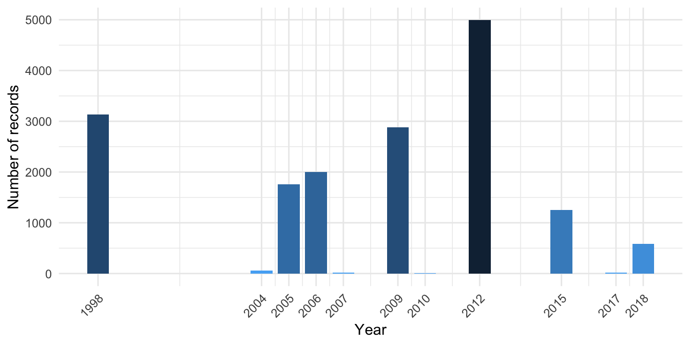
Sampling is concentrated in two periods: a large 1998 campaign and a main cluster from 2004 to 2018 with internal gaps. We download yearly temperature spanning 1998 to 2018, covering both periods.
Downloading Bottom Temperature
cms_download_subset() returns a stars object (a multi-dimensional array). The timerange specifies the date range to download; any time steps falling within this range will be included:
bottom_temp_stars <- cms_download_subset(
product = "MEDSEA_MULTIYEAR_PHY_006_004",
layer = "cmems_mod_med_phy-tem_my_4.2km_P1Y-m",
variable = "bottomT",
region = study_bbox,
timerange = c("1998-01-01", "2018-12-31")
)Inspecting the Stars Object
Let’s examine the structure. Printing a stars object shows its attribute (the variable, with summary statistics) and its dimensions:
bottom_temp_stars
#> stars object with 3 dimensions and 1 attribute
#> attribute(s):
#> Min. 1st Qu. Median Mean 3rd Qu. Max. NA's
#> bottomT [°C] 12.74502 12.90777 13.20406 13.45918 13.76841 18.30636 35406
#> dimension(s):
#> from to offset delta refsys
#> longitude 1 97 2.979 0.04167 WGS 84 (CRS84)
#> latitude 1 37 42.46 0.04167 WGS 84 (CRS84)
#> time 1 21 NA NA udunits
#> values
#> longitude NULL
#> latitude NULL
#> time [51543360,52068960) [minutes since 1900-01-01],...,[62062560,62588160) [minutes since 1900-01-01]
#> x/y
#> longitude [x]
#> latitude [y]
#> timest_dimensions() shows the three dimensions of the object:
stars::st_dimensions(bottom_temp_stars)
#> from to offset delta refsys
#> longitude 1 97 2.979 0.04167 WGS 84 (CRS84)
#> latitude 1 37 42.46 0.04167 WGS 84 (CRS84)
#> time 1 21 NA NA udunits
#> values
#> longitude NULL
#> latitude NULL
#> time [51543360,52068960) [minutes since 1900-01-01],...,[62062560,62588160) [minutes since 1900-01-01]
#> x/y
#> longitude [x]
#> latitude [y]
#> timeEach yearly time step is a 2D spatial grid (longitude × latitude), and the full object stacks these along the time dimension. We can inspect the time values directly:
time_vals <- stars::st_get_dimension_values(bottom_temp_stars, "time")
# Ensure consistent POSIXct format (stars may return units objects
# depending on the data source and platform)
time_vals <- as.POSIXct(time_vals)
cat("Time steps:", length(time_vals))
#> Time steps: 21
cat("First:", format(time_vals[1]))
#> First: 1998-01-01
cat("Last:", format(time_vals[length(time_vals)]))
#> Last: 2018-01-01Filtering to Sampled Years
Since our download spans 1998-2018 but not all years have occurrence data, we filter the time dimension to keep only years when sampling actually occurred. This gives a temperature mean that reflects the conditions organisms were experiencing.
sampled_years <- unique(benthos_occurrences$year)
keep <- as.integer(format(time_vals, "%Y")) %in% sampled_years
bottom_temp_sampled <- bottom_temp_stars[,,, keep]
cat("Retained", sum(keep), "of", length(keep), "yearly time steps")
#> Retained 11 of 21 yearly time steps
cat("Years kept:", sort(unique(as.integer(format(time_vals[keep], "%Y")))))
#> Years kept: 1998 2004 2005 2006 2007 2009 2010 2012 2015 2017 2018stars objects are indexed as [attribute, dim1, dim2, dim3], where the first position selects attributes (variables like bottomT) and the rest select along the spatial and temporal dimensions. Leaving a position empty keeps all values along that axis. So [,,,keep] means: all attributes, all longitudes, all latitudes, filter time.
Computing the Mean Temperature
st_apply() works like R’s apply(): the first argument names the dimensions to keep, and the function is applied over all remaining dimensions. Here, c("longitude", "latitude") keeps the spatial dimensions and applies mean across time, collapsing all retained yearly time steps into a single 2D layer:
Converting Stars to Terra Raster
The rest of our analysis uses terra for raster operations (zonal statistics, extraction). To convert from stars to a terra SpatRaster, we need to regularise the grid: stars stores the Copernicus Marine grid as a list of cell boundaries rather than as a regular “start + step size” definition, and terra::rast() only accepts the latter.
stars::st_warp() resamples onto a regular target grid. We build it with stars::st_as_stars(), which takes a bounding box and a cell size (dx, dy) and produces a regular grid. We derive the cell size from the data’s extent and number of cells to preserve the native resolution. Note that the target grid inherits its CRS from the bounding box of the source data; the reprojection to our shared EPSG:3035 CRS happens later when we compute zonal statistics:
# Derive native cell size from extent and number of cells
dims <- stars::st_dimensions(bottom_temp_mean)
temp_bbox <- sf::st_bbox(bottom_temp_mean)
dx <- as.numeric((temp_bbox["xmax"] - temp_bbox["xmin"]) / dims[["longitude"]]$to)
dy <- as.numeric((temp_bbox["ymax"] - temp_bbox["ymin"]) / dims[["latitude"]]$to)
bottom_temp_mean <- bottom_temp_mean |>
stars::st_warp(stars::st_as_stars(temp_bbox, dx = dx, dy = dy)) |>
terra::rast()
names(bottom_temp_mean) <- "bottom_temp_C"
bottom_temp_mean
#> class : SpatRaster
#> size : 37, 98, 1 (nrow, ncol, nlyr)
#> resolution : 0.04166667, 0.04166667 (x, y)
#> extent : 2.979167, 7.0625, 42.45833, 44 (xmin, xmax, ymin, ymax)
#> coord. ref. : lon/lat WGS 84 (CRS84) (OGC:CRS84)
#> source(s) : memory
#> name : bottom_temp_C
#> min value : 12.86402
#> max value : 17.54606Visualising Bottom Temperature
Code
ggplot() +
geom_spatraster(data = bottom_temp_mean) +
scale_fill_viridis_c(
name = "Temperature (°C)",
na.value = "gray90",
option = "turbo"
) +
labs(title = "Mean Bottom Temperature (sampled years)") +
theme_minimal() +
theme(legend.position = "bottom")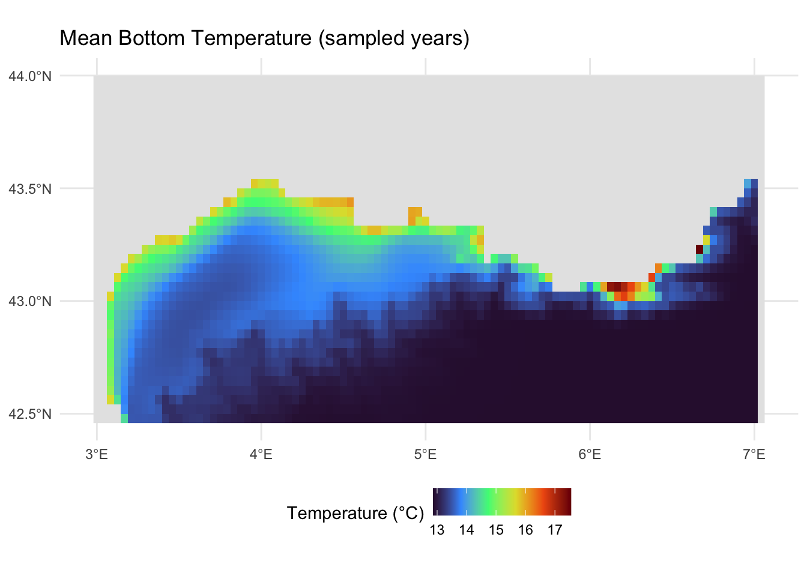
NoteWhat else is available from Copernicus Marine?
In this tutorial we retrieved bottom temperature from a physical reanalysis product. The Copernicus Marine Service also provides:
- Other physical variables: Salinity, currents, sea level, mixed layer depth
- Biogeochemical products: Nutrients, chlorophyll, dissolved oxygen, pH
- Multiple temporal resolutions: Daily, monthly, and climatological means
- Multiple depths: Surface to bottom, including full 3D fields
Browse available products with cms_products_list() and follow the same discovery workflow shown above. See the CopernicusMarine package documentation for further examples.
Linking Trait Data from MOBS
The Marine Organism Body Size (MOBS) database provides body size measurements for marine species, linked via WoRMS AphiaIDs.
About MOBS
The MOBS database (McClain et al. 2025) compiles body size measurements (length, diameter/width, height) from literature sources for marine species, linked via WoRMS AphiaIDs. This makes it ideal for linking to occurrence data like ours.
Loading MOBS Data
The MOBS database is available as a CSV file on GitHub, which we can download directly with readr::read_csv(). The database uses WoRMS AphiaIDs as its species identifier (allowing us to join to our occurrence data), stores body size measurements (length, diameter/width, height) in centimetres, and conveniently includes taxonomic classification (phylum, class, order, etc.). We pipe the result through janitor::clean_names() to convert the mixed-case column names (e.g. valid_aphiaID, scientificName) to consistent snake_case.
mobs_url <- "https://raw.githubusercontent.com/crmcclain/MOBS_OPEN/main/data_all_112224.csv"
mobs_raw <- readr::read_csv(mobs_url, show_col_types = FALSE) |>
janitor::clean_names()
head(mobs_raw, 10)MOBS records body size using different measurements depending on the organism: length, diameter/width, or height. Rather than restricting to a single measurement type (which would lose entire taxonomic groups like Hydrozoa), we take the largest available linear dimension for each record as a general body size descriptor, and convert from centimetres to millimetres. We use pmax() (parallel maximum) to do this row-wise: unlike max() which returns a single value across all inputs, pmax() compares values across columns for each row and returns the largest, ignoring NAs. We then filter to species present in our occurrence data:
occurrence_aphiaids <- unique(benthos_occurrences$aphiaid)
mobs <- mobs_raw |>
mutate(
body_size_mm = pmax(length_cm, diameter_width_cm, height_cm, na.rm = TRUE) *
10
) |>
filter(valid_aphia_id %in% occurrence_aphiaids, !is.na(body_size_mm)) |>
select(aphiaid = valid_aphia_id, scientific_name, body_size_mm, phylum, class)
cat("Rows matched:", nrow(mobs))
#> Rows matched: 2528
cat("Unique species:", n_distinct(mobs$aphiaid))
#> Unique species: 728
cat("Duplicated AphiaIDs:", sum(duplicated(mobs$aphiaid)))
#> Duplicated AphiaIDs: 1800Some species have multiple measurements from different literature sources. For our analysis we need a single value per species, so we take the maximum body size:
Since we filtered MOBS to species present in our occurrence data (via occurrence_aphiaids), we can check what proportion of our occurrence species have body size data:
head(mobs, 10)Body Size Distribution
Let’s examine the distribution of body sizes among our matched species:
Code
n_bins <- 30
log_range <- diff(range(log10(mobs$max_body_size_mm)))
binwidth <- log_range / n_bins
ggplot(mobs, aes(x = max_body_size_mm)) +
geom_histogram(
bins = n_bins,
fill = "#0077BE",
colour = "white",
alpha = 0.7
) +
geom_density(
aes(
y = after_stat(density) * nrow(mobs) * binwidth,
colour = "Kernel density estimate"
),
linewidth = 0.8,
key_glyph = "path"
) +
scale_colour_manual(values = "black", name = NULL) +
scale_x_log10() +
labs(
title = "Body Size Distribution",
subtitle = sprintf(
"n = %d Gulf of Lion species with MOBS data",
nrow(mobs)
),
x = "Maximum body size (mm, log scale)",
y = "Number of species"
) +
theme_minimal() +
theme(legend.position = "top")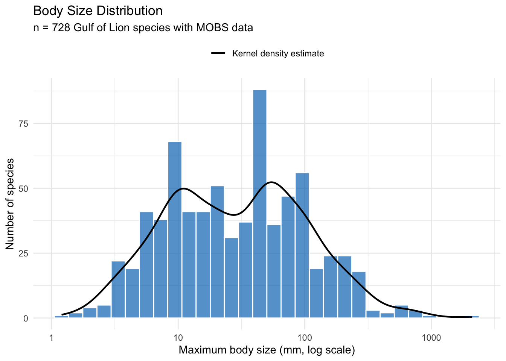
The distribution is roughly log-normal with a median around 30 mm, but the density curve reveals clear bimodality with peaks near 10 mm and 50 mm. Breaking this down by taxonomic class (Figure 8) helps explain the pattern.
Code
class_counts <- mobs |>
filter(!is.na(class)) |>
count(class) |>
filter(n >= 5) |>
mutate(label = sprintf("%s (n = %d)", class, n))
plot_data <- mobs |>
inner_join(class_counts, by = "class") |>
mutate(label = reorder(label, max_body_size_mm, FUN = median))
ggplot(plot_data, aes(x = label, y = max_body_size_mm)) +
geom_violin(fill = "#0077BE", alpha = 0.5, colour = "white") +
geom_boxplot(width = 0.15, outlier.size = 0.8, alpha = 0.5) +
scale_y_log10() +
coord_flip() +
labs(
x = NULL,
y = "Maximum body size (mm, log scale)"
) +
theme_minimal()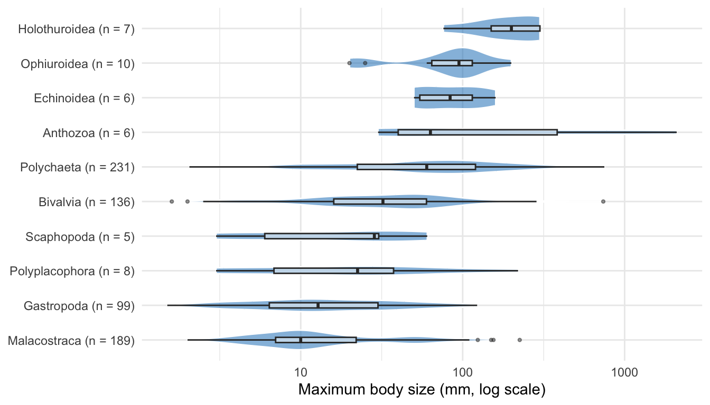
The first peak in the histogram is driven by malacostracan crustaceans (189 species), while the second reflects the larger polychaetes (231 species) and bivalves (136 species). Together these three classes make up 76% of the matched species.
Spatial Data Integration
Now we bring our data sources together. First, we enrich seabed_habitats with environmental summaries (mean depth and temperature) for each polygon. Then we create benthos_joined by using sf::st_join() to spatially assign each species record to the habitat polygon it falls within, giving it that polygon’s substrate and biozone, and joining body size data from MOBS via AphiaID.
Checking CRS Alignment
Before combining spatial datasets, we verify their coordinate reference systems. Both vector datasets were downloaded in EPSG:3035, while the rasters are in WGS 84 (EPSG:4326):
The vector datasets share EPSG:3035, so spatial joins will work directly. For the raster extractions below, we reproject the rasters to match the polygons.
Extracting Environmental Conditions
Rather than sampling a single centroid point per polygon, we compute zonal statistics, summarising all raster cells that fall within each habitat polygon. terra::extract() takes a raster and a set of polygons, identifies which raster cells fall within each polygon, and applies a summary function (here mean) across them. This captures the spatial extent of each habitat and produces more robust environmental characterisations, especially for large or irregularly shaped polygons. Depth and temperature have different native resolutions, so we extract each separately to avoid resampling.
Spatial operations like calculating distances, areas, and zonal statistics require a projected coordinate system with linear units (metres), not geographic coordinates (degrees). In a geographic CRS like WGS 84, the ground distance represented by one degree of longitude varies with latitude, so calculations based on cell counts or coordinate differences will be distorted. An equal-area projection like EPSG:3035, chosen to suit our European study area, ensures that every raster cell covers the same ground area, so each contributes equally to the mean. We reproject the rasters to match our habitat polygons before extraction:
seabed_habitats <- seabed_habitats |>
mutate(
mean_depth_m = terra::extract(
terra::project(depth, "EPSG:3035"),
seabed_habitats,
fun = mean,
na.rm = TRUE
)$depth_m,
mean_temp_c = terra::extract(
terra::project(bottom_temp_mean, "EPSG:3035"),
seabed_habitats,
fun = mean,
na.rm = TRUE
)$bottom_temp_C
)
names(seabed_habitats)
#> [1] "id" "objectid" "oxygen" "salinity" "energy"
#> [6] "biozone" "substrate" "eunis2019c" "eunis2019d" "all2019d"
#> [11] "all2019dl2" "geometry" "mean_depth_m" "mean_temp_c"Joining Occurrences to Habitat Polygons and Traits
We combine the body size join (by AphiaID) and the spatial habitat polygon join (by geographic location) in a single pipeline.
The first step uses inner_join(), a standard dplyr join that matches rows by shared values in a column (aphiaid). Unlike left_join() which keeps all rows from the left table, inner_join() only retains rows where the key exists in both tables. This means only occurrence records whose species also appear in MOBS (i.e. have body size data) are kept.
Although the occurrence data already contains pre-matched EUNIS codes, we use a spatial join rather than joining on those codes. This is an important distinction: a join on EUNIS codes would associate each occurrence with every polygon sharing that habitat type, duplicating records across polygons where the species was never actually recorded. A spatial join instead links each occurrence to the specific polygon it falls within, preserving the actual environmental and habitat conditions in which it was recorded.
We perform spatial joins with sf::st_join() which works differently from a standard dplyr join: instead of matching values in columns, it matches on geometry. For each point in the left dataset (occurrences), st_join() finds which polygon in the right dataset (habitat polygons) contains that point, and appends that polygon’s attributes. The default spatial predicate is st_intersects, meaning a point is matched to any polygon it touches or falls inside. This is the spatial equivalent of left_join(): all rows from the left dataset are kept, and unmatched rows get NA for the joined columns. Because both datasets are in EPSG:3035, the spatial join uses planar geometry directly (no geographic coordinate warnings).
We select() only substrate and biozone from the habitat polygons before joining, so only those columns are appended. Finally, we filter out any occurrences without a biozone value (these fall outside habitat polygon coverage, e.g. in areas excluded by our CQL filter or gaps in the seabed map), keeping only records we can assign to a biozone for our characterisation:
benthos_joined <- benthos_occurrences |>
inner_join(mobs, by = "aphiaid") |>
st_join(select(seabed_habitats, substrate, biozone)) |>
filter(!is.na(biozone))
cat(sprintf(
"Retained %d of %d occurrences (%.1f%%) with body size and habitat data",
nrow(benthos_joined),
nrow(benthos_occurrences),
100 * nrow(benthos_joined) / nrow(benthos_occurrences)
))
#> Retained 11832 of 16694 occurrences (70.9%) with body size and habitat dataA preview of the joined dataset, showing each occurrence with its species name, body size, EUNIS classification, substrate, and biozone:
benthos_joined |>
st_drop_geometry() |>
select(scientificname, max_body_size_mm, EUNIS2019C, substrate, biozone) |>
head(10)Characterising Biozones
Biozones represent the vertical zonation of the seabed, from the sunlit infralittoral through the circalittoral to the deep bathyal and abyssal zones. This depth gradient is the primary ecological axis structuring benthic communities, influencing light availability, temperature, pressure, and food supply. The EUSeaMap habitat layer encodes biozone alongside habitat type and substrate for each polygon, giving us a natural framework to bring together all our data sources.

{kind=link}
Habitat Composition by Biozone
Different EUNIS habitat types are distributed across biozones. Using the full set of habitat polygons in the study area, this stacked bar chart shows which habitat types occur in each zone:
Code
habitat_biozone_data <- seabed_habitats |>
filter(!is.na(biozone), !is.na(eunis2019d)) |>
count(biozone, eunis2019c, eunis2019d) |>
group_by(biozone) |>
mutate(prop = n / sum(n)) |>
ungroup() |>
mutate(label = if_else(prop >= 0.08, eunis2019c, ""))
ggplot(
habitat_biozone_data,
aes(x = biozone, y = n, fill = str_wrap(eunis2019d, width = 50))
) +
geom_bar(stat = "identity", position = "fill", colour = "white", linewidth = 0.3) +
geom_text(
aes(label = label),
position = position_fill(vjust = 0.5),
colour = "white",
size = 3.5,
fontface = "bold"
) +
scale_fill_viridis_d(option = "turbo", direction = -1, name = NULL) +
scale_y_continuous(labels = scales::percent) +
labs(x = "Biozone", y = "Proportion of polygons") +
theme_minimal() +
theme(
axis.text.x = element_text(angle = 30, hjust = 1),
legend.position = "bottom",
legend.text = element_text(size = 9),
legend.key.size = unit(0.4, "cm")
) +
guides(fill = guide_legend(ncol = 2, override.aes = list(alpha = 1)))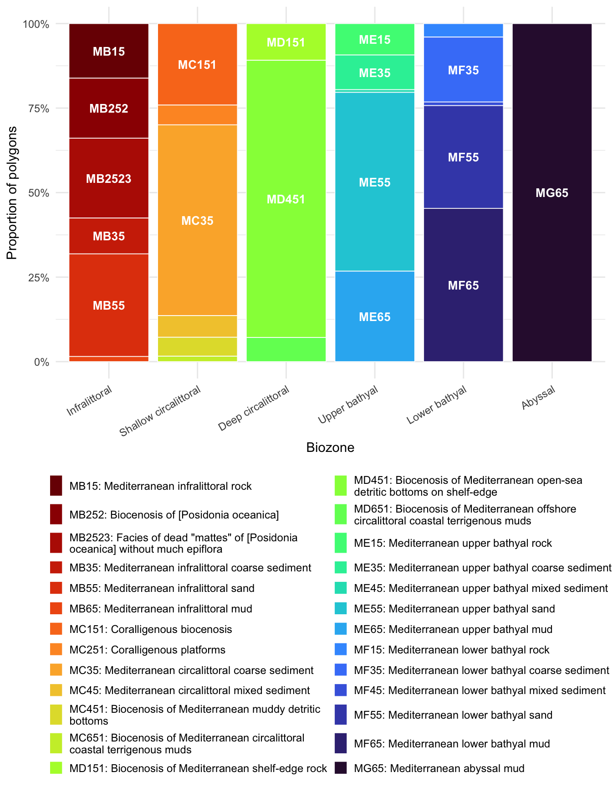
Habitat diversity varies across biozones. The infralittoral supports the greatest variety of EUNIS habitat types (including Posidonia beds, rock, sand, and coarse sediment). The shallow circalittoral retains several types (coralligène, coarse and mixed sediments, muddy detritic bottoms), while the deep circalittoral is dominated by a single detritic habitat. The bathyal zones show renewed diversity with rock, coarse sediment, mixed sediment, sand, and mud all represented, though mud becomes increasingly dominant. Only the abyssal maps onto a single habitat type (Mediterranean abyssal mud).
Substrate Composition by Biozone
Substrate type (the physical material of the seabed) also varies with depth:
Code
substrate_biozone_data <- seabed_habitats |>
filter(!is.na(biozone), !is.na(substrate)) |>
count(biozone, substrate)
ggplot(substrate_biozone_data, aes(x = biozone, y = n, fill = substrate)) +
geom_bar(stat = "identity", position = "fill") +
scale_fill_brewer(palette = "Set3", name = "Substrate") +
scale_y_continuous(labels = scales::percent) +
labs(x = "Biozone", y = "Proportion of polygons") +
theme_minimal() +
theme(axis.text.x = element_text(angle = 30, hjust = 1))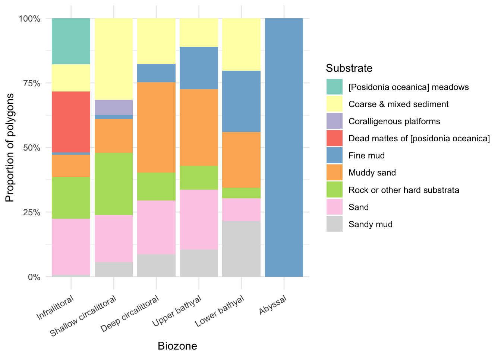
Substrate composition also varies with depth. The infralittoral is the most diverse, featuring Posidonia meadows, coarse and mixed sediment, rock, sand, and dead mattes. Sand dominates the shallow circalittoral, giving way to muddy sand and fine mud in the deep circalittoral. The bathyal zones retain a mix of substrates (rock, muddy sand, sand, fine mud) with fine mud becoming increasingly prominent. The abyssal zone is entirely fine mud.
Environmental Conditions by Biozone
Using the depth (EMODnet WCS) and bottom temperature (Copernicus Marine) data we extracted earlier, we can characterise the environmental conditions within each biozone. Each point represents one habitat polygon:
Code
env_data <- seabed_habitats |>
filter(!is.na(biozone), !is.na(mean_depth_m))
p_depth <- ggplot(env_data, aes(x = biozone, y = mean_depth_m)) +
geom_violin(fill = "#0077BE", alpha = 0.5, colour = "white") +
geom_boxplot(width = 0.15, outlier.size = 0.8, alpha = 0.5) +
labs(x = NULL, y = "Mean depth (m)") +
theme_minimal() +
theme(axis.text.x = element_text(angle = 30, hjust = 1))
p_temp <- ggplot(
env_data |> filter(!is.na(mean_temp_c)),
aes(x = biozone, y = mean_temp_c)
) +
geom_violin(fill = "#E74C3C", alpha = 0.5, colour = "white") +
geom_boxplot(width = 0.15, outlier.size = 0.8, alpha = 0.5) +
labs(x = NULL, y = "Mean bottom temperature (\u00b0C)") +
theme_minimal() +
theme(axis.text.x = element_text(angle = 30, hjust = 1))
p_depth + p_temp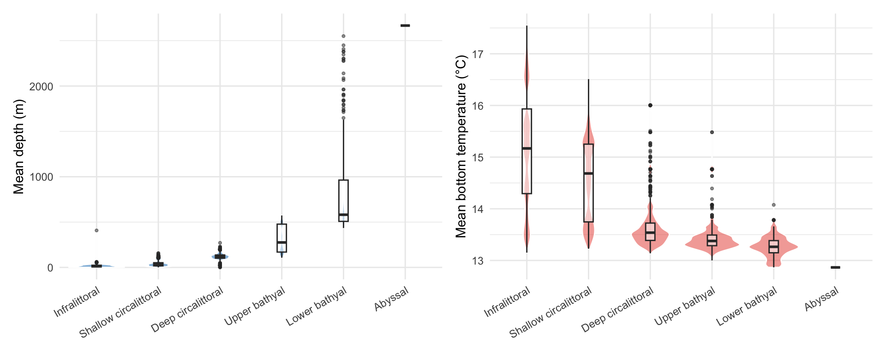
Depth increases steadily across biozones as expected, from near-surface in the infralittoral to over 2,500 m in the abyssal. The upper and lower bathyal zones show the greatest variability in depth, spanning several hundred metres each. Bottom temperature shows a narrower overall range (~13 to 17 °C): the infralittoral and shallow circalittoral are warmer and more variable (reflecting seasonal and coastal influences), while the deeper biozones converge on a narrow band around 13 °C.
Body Size Distributions by Biozone
Finally, we examine how body size varies across biozones. Ridge plots (from ggridges) show kernel density estimates stacked vertically, with fill colour mapped to body size. scale controls how much adjacent ridges overlap (0.9 keeps them mostly separate), and rel_min_height trims density tails below 1% of the peak to avoid long, thin artefacts:
Code
biozone_plot_data <- benthos_joined |>
st_drop_geometry() |>
filter(!is.na(biozone), !is.na(max_body_size_mm)) |>
group_by(biozone) |>
filter(n() >= 10) |>
ungroup()
ggplot(
biozone_plot_data,
aes(x = max_body_size_mm, y = factor(biozone, levels = rev(levels(biozone))))
) +
geom_density_ridges_gradient(
aes(fill = after_stat(x)),
scale = 0.9,
rel_min_height = 0.01
) +
scale_x_log10() +
scale_fill_viridis_c(
name = "Body size (mm)",
option = "plasma",
trans = "log10",
labels = scales::label_comma()
) +
labs(
x = "Maximum body size (mm, log scale)",
y = "Biozone"
) +
theme_minimal()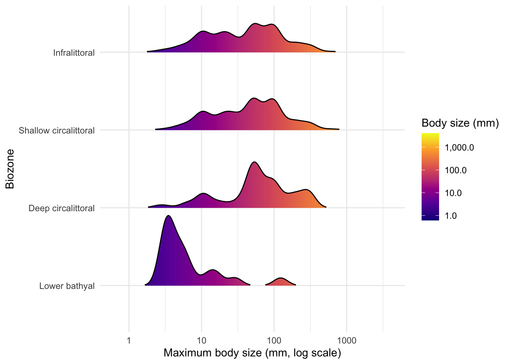
Biozones with fewer than 10 records are excluded from the plot. The upper bathyal has too few records with body size data, and no occurrences fall within the abyssal zone. Among the remaining biozones, the lower bathyal is dominated by smaller-bodied species, while the shallower zones (infralittoral, circalittoral) show broader body size distributions extending to larger species. This pattern is consistent with the shift in taxonomic composition and environmental conditions across depth zones.
We can break this down further by looking at taxonomic class within each biozone, using the same violin + boxplot approach as Figure 8:
Code
class_biozone_data <- benthos_joined |>
st_drop_geometry() |>
filter(!is.na(biozone), !is.na(max_body_size_mm), !is.na(class)) |>
group_by(biozone) |>
filter(n() >= 10) |>
ungroup()
# Keep only classes with >= 5 species across all biozones
class_keep <- class_biozone_data |>
distinct(aphiaid, class) |>
count(class) |>
filter(n >= 5)
class_biozone_data <- class_biozone_data |>
semi_join(class_keep, by = "class") |>
mutate(class = reorder(class, max_body_size_mm, FUN = median))
ggplot(class_biozone_data, aes(x = class, y = max_body_size_mm)) +
geom_violin(fill = "#0077BE", alpha = 0.5, colour = "white") +
geom_boxplot(width = 0.15, outlier.size = 0.5, alpha = 0.5) +
scale_y_log10() +
coord_flip() +
facet_wrap(~biozone) +
labs(
x = NULL,
y = "Maximum body size (mm, log scale)"
) +
theme_minimal() +
theme(strip.text = element_text(face = "bold"))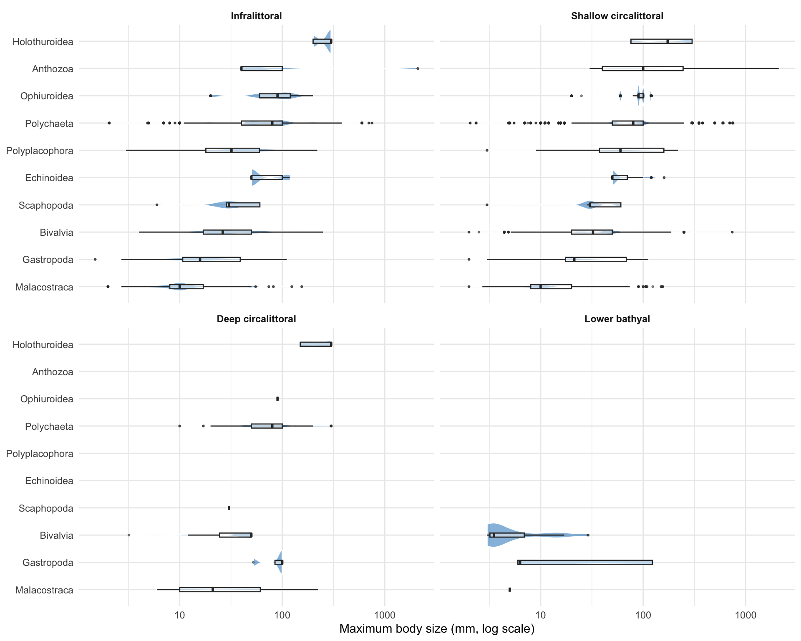
Breaking body size down by taxonomic class within each biozone reveals which groups drive the overall patterns. The shallower biozones (infralittoral and shallow circalittoral) support the widest range of classes and body sizes. Malacostraca consistently appear as the smallest-bodied group across all biozones. The deeper biozones retain fewer classes, with polychaetes, bivalves, and malacostraca persisting into the deep circalittoral and lower bathyal while groups like anthozoa and echinoidea drop out.
Interactive Map
The plots above characterise each biozone in isolation. An interactive map brings these layers together spatially, letting you see where habitats, species occurrences, and body size classes are distributed across the Gulf of Lion. You can zoom into shelf features and submarine canyons, click individual occurrences for species details, and toggle habitat polygons on and off to explore spatial relationships that static plots cannot capture.
In earlier tutorials we used tmap for interactive maps. Here we use the leaflet package, which provides a direct R interface to the Leaflet.js library. While tmap is excellent for quick thematic maps, leaflet gives finer control over layer styling, pop-up content, and rendering behaviour, making it a valuable tool to have in your spatial analysis toolkit.
Unlike tmap, leaflet requires all data in WGS 84 (EPSG:4326), so both layers need reprojecting with st_transform(). The habitat polygons also contain very detailed coastline and boundary geometry that is unnecessary for an overview map and slows down interactive rendering, so we additionally repair any invalid geometries with st_make_valid() (common in complex polygon datasets from web services) and reduce vertex counts with st_simplify(). The dTolerance parameter sets the maximum deviation in CRS units (here metres for EPSG:3035):
habitats_leaflet <- seabed_habitats |>
st_make_valid() |>
st_simplify(dTolerance = 200) |>
st_transform(4326)For the occurrence points, we bin continuous body sizes into discrete size classes using cut(), creating categories that are easy to distinguish on a colour scale, and reproject to WGS 84:
We build the map in layers. addPolygons() draws the habitat polygons, using colorFactor() to map EUNIS habitat codes to colours from the "turbo" palette. addCircleMarkers() overlays occurrence points coloured by body size class. Both layers include clickable pop-ups with relevant attributes:
# Colour palettes
habitat_pal <- colorFactor("turbo", domain = habitats_leaflet$eunis2019c, reverse = TRUE)
size_pal <- colorFactor("viridis", domain = benthos_leaflet$size_class)
leaflet() |>
addProviderTiles("Esri.WorldGrayCanvas") |>
addPolygons(
data = habitats_leaflet,
fillColor = ~ habitat_pal(eunis2019c),
fillOpacity = 0.5,
weight = 0,
smoothFactor = 0,
group = "Habitats",
popup = ~ paste0(
"<b>",
eunis2019d,
"</b><br>",
"<b>Biozone:</b> ",
biozone,
"<br>",
"<b>Substrate:</b> ",
substrate,
"<br>",
"<b>Mean depth (m):</b> ",
round(mean_depth_m, 1),
"<br>",
"<b>Mean bottom temp (\u00B0C):</b> ",
round(mean_temp_c, 1)
)
) |>
addCircleMarkers(
data = benthos_leaflet,
radius = 4,
fillColor = ~ size_pal(size_class),
fillOpacity = 0.7,
weight = 0.5,
color = "white",
group = "Occurrences",
popup = ~ paste0(
"<b>Species:</b> ",
scientificname,
"<br>",
"<b>Body size (mm):</b> ",
max_body_size_mm,
"<br>",
"<b>Habitat:</b> ",
EUNIS2019C,
"<br>",
"<b>Biozone:</b> ",
biozone
)
) |>
addLegend(
pal = size_pal,
values = benthos_leaflet$size_class,
title = "Body size",
group = "Occurrences"
) |>
addLayersControl(
overlayGroups = c("Habitats", "Occurrences"),
options = layersControlOptions(collapsed = FALSE)
)The popup arguments use HTML strings to format the pop-up content. Tags like <b>...</b> for bold text and <br> for line breaks give control over how information is presented when a user clicks a feature. This is a key advantage of leaflet over tmap: full HTML support in pop-ups means you can style text, add links, or even embed images. See the Leaflet for R documentation on popups and labels for more examples.
Note the smoothFactor = 0 argument in addPolygons(). By default, Leaflet applies its own Douglas-Peucker simplification to polygon coordinates at render time to improve performance. For complex or concave polygons this can cause the simplified outline to cross itself, producing visible line artifacts across the polygon fill. Since we have already simplified the geometry server-side with st_simplify(), setting smoothFactor = 0 disables this additional client-side step and avoids these artifacts.
TipAdding Copernicus Marine tile layers
The CopernicusMarine package can add WMTS tile layers directly to leaflet maps using addCmsWMTSTiles(). This is useful for overlaying Copernicus Marine data (e.g. sea surface temperature, chlorophyll) as background layers without downloading the data first.
Discussion
Key Findings
This analysis demonstrates the integration of multiple EU marine data infrastructures to characterise benthic biozones in the Gulf of Lion:
- Habitat composition varies across biozones: Shallow zones are dominated by sandy and coarse substrates, while deeper zones shift towards muddy sediments
- Environmental gradients structure biozones: Depth and temperature covary with biozone, confirming that biozones capture meaningful environmental variation
- Body size shifts with depth: Shallower biozones tend to support species with larger body sizes, with a shift towards smaller-bodied fauna in deeper zones
- Data integration: Linking EMODnet occurrence and habitat data with Copernicus environmental layers and external trait databases enables multi-faceted ecological characterisation
Ecological Interpretation
Biozones represent the vertical zonation of the seabed, reflecting gradients in light, pressure, temperature, and food supply. Our results are consistent with several ecological expectations:
- Depth zonation: The infralittoral and circalittoral zones, receiving more light and organic input, support diverse habitat types and substrates
- Body size patterns: The tendency for smaller body sizes at depth may reflect reduced food availability in deeper zones, consistent with Bergmann’s rule inversions observed in some marine taxa
- Substrate control: Substrate composition changes with depth and hydrodynamic regime, shaping habitat availability
However, these interpretations require caution:
- Sampling bias: Occurrence records may not represent true community composition, and shallow zones are typically better sampled
- Taxonomic coverage: MOBS trait data is incomplete, with smaller and less-studied taxa underrepresented
- Spatial resolution: Environmental data resolution may not capture fine-scale habitat heterogeneity
Limitations
- Trait coverage: Not all species in the occurrence data have body size records in MOBS, so body size patterns reflect a subset of the community
- Temporal mismatch: Occurrence records span different time periods than environmental data
- Single region: Patterns observed in the Gulf of Lion may not generalise to other Mediterranean basins with different oceanographic settings
What You’ve Learned
This tutorial demonstrated advanced multi-source data integration:
- EMODnet WFS: Accessing seabed habitat polygons and species occurrence records
- EMODnet WCS: Retrieving bathymetry rasters for zonal statistics
- Copernicus Marine Service: Downloading bottom temperature data
- External databases: Linking to body size trait data (MOBS) via taxonomic identifiers
- Spatial operations: Zonal statistics, CRS reprojection, and spatial joins across data types
- Biozone characterisation: Using biozones as an organising framework to synthesise habitat, environmental, and trait data
These skills enable complex marine ecological analyses that draw on the full breadth of available EU marine data.
Further Resources
- EMODnet Seabed Habitats Portal: Habitat maps
- EMODnet Biology Portal: Species occurrence data
- Copernicus Marine Service: Oceanographic data
- World Register of Marine Species (WoRMS): Taxonomic backbone
- MOBS Database: Marine body size data
-
sfpackage: Simple features for R -
terrapackage: Spatial data analysis with rasters and vectors -
starspackage: Spatiotemporal arrays
References
McClain, C. R., N. A. Heim, M. L. Knope, et al. 2025. “MOBS 1.0: A Database of Interspecific Variation in Marine Organismal Body Sizes.” Global Ecology and Biogeography 34: e70062. https://doi.org/10.1111/geb.70062.